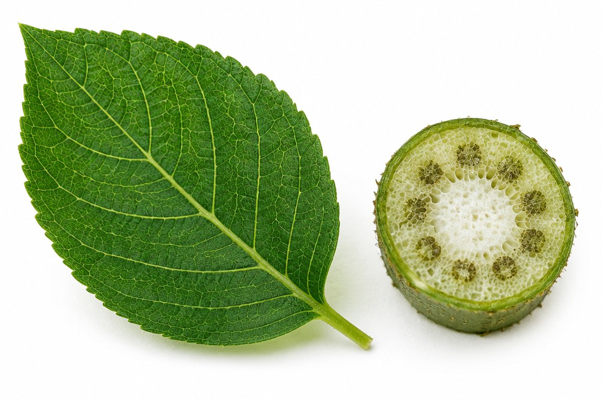

식물은 어떻게 스스로 양분을 만들까?

동물은 먹이를 먹어야 살지만, 식물은 먹이를 먹지 않는데도 쑥쑥 자라요. 식물의 뿌리, 줄기, 잎, 꽃은 각각 어떤 일을 할까요?
식물도 세포로 되어 있어요
모든 생물은 '세포'로 이루어져 있어요. 세포는 매우 작아서 현미경으로 봐야 보여요.
식물 세포는 세포막 바깥에 단단한 '세포벽'이 있고, 그 안에 핵이 있어요. 동물 세포는 세포벽이 없다는 점이 달라요.
양파 껍질을 얇게 벗겨 현미경으로 보면 벽돌처럼 쌓인 세포가 보여요.
뿌리와 줄기
뿌리는 땅속의 물을 흡수하고, 식물을 지지해요. 무나 고구마처럼 양분을 저장하는 뿌리도 있어요. 뿌리털은 물을 흡수하는 면적을 넓혀 줘요.
줄기는 뿌리에서 흡수한 물이 잎과 꽃까지 이동하는 통로이고, 식물을 지지해요. 감자처럼 양분을 저장하는 줄기도 있어요.
백합 줄기를 붉은 색소 물에 꽂아 두면 줄기를 자른 면에 붉은 점들이 보여요. 물이 지나간 길이에요.
잎 – 광합성과 증산 작용
식물이 빛을 이용해 물과 이산화 탄소로 스스로 양분을 만드는 것을 '광합성'이라고 해요. 광합성은 주로 잎에서 일어나고, 녹말 같은 양분과 함께 산소가 만들어져요.
뿌리에서 올라온 물은 잎의 작은 구멍인 '기공'을 통해 수증기가 되어 밖으로 빠져나가는데, 이것을 '증산 작용'이라고 해요. 증산 작용은 뿌리에서 물을 끌어올리고 식물의 온도를 조절하는 데 도움을 줘요.
빛을 받은 잎에 아이오딘-아이오딘화 칼륨 용액을 떨어뜨리면 청람색으로 변해요. 녹말이 만들어졌다는 뜻이에요.
꽃과 열매
꽃은 주로 암술, 수술, 꽃잎, 꽃받침으로 되어 있어요. 꽃은 씨를 만드는 일을 해요.
수술에서 만든 꽃가루가 암술로 옮겨지는 것을 '꽃가루받이(수분)'라고 해요. 꽃가루받이가 되면 씨가 생기고, 씨를 싸고 있는 부분이 자라 열매가 돼요. 꽃가루는 곤충, 새, 바람, 물 등이 옮겨 줘요.
씨가 퍼지는 방법
열매 속 씨는 여러 방법으로 멀리 퍼져요. 민들레 씨는 솜털이 있어 바람에 날려 가고, 도꼬마리 씨는 갈고리가 있어 동물 털에 붙어 퍼져요.
벚나무 열매는 동물에게 먹힌 뒤 씨가 똥과 함께 나와 퍼지고, 봉선화는 열매 껍질이 터지면서 씨가 튀어 나가요. 연꽃이나 코코야자는 물에 떠서 퍼져요.
핵심 낱말
- 세포
- 생물을 이루는 기본 단위
- 광합성
- 식물이 빛을 이용해 물과 이산화 탄소로 양분을 만드는 것
- 기공
- 잎에 있는 아주 작은 구멍
- 증산 작용
- 잎의 기공으로 물이 수증기가 되어 빠져나가는 것
- 꽃가루받이
- 수술의 꽃가루가 암술로 옮겨지는 것
한 줄 정리
- 생물은 세포로 이루어져 있고, 식물 세포에는 세포벽이 있어요.
- 뿌리는 물을 흡수하고, 줄기는 물을 옮기며, 잎은 광합성과 증산 작용을 해요.
- 꽃은 꽃가루받이를 거쳐 씨와 열매를 만들고, 씨는 여러 방법으로 퍼져요.
학교 교육과정 연결
- [6과11-01] 생물을 이루고 있는 기본 단위인 세포를 현미경으로 관찰할 수 있다.
- [6과11-02] 식물의 각 기관의 구조를 관찰하고, 기능을 알아보는 실험을 수행하여 식물 각 기관의 구조와 기능을 설명할 수 있다.